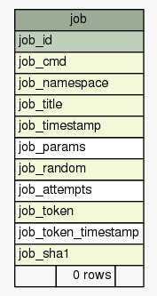
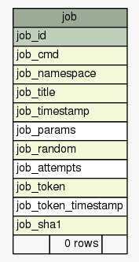
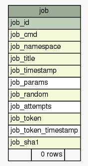

Tables
Relationships
Utility Tables
Constraints
Anomalies
Columns
Donate
SchemaSpy Analysis of
mediawiki
.
public
- Utility Tables
Generated by
SchemaSpy
Generated on Mon May 04 23:32 UTC 2015
Legend:
Primary key columns
Columns with indexes
Excluded column relationships
Dashed lines show implied relationships
<
n
> number of related tables


 
